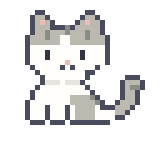
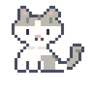
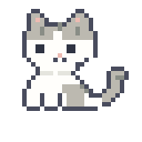
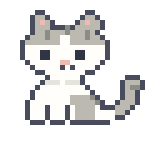
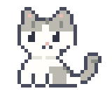
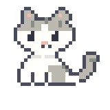

Still Making · CAT STUDY
기존 얼굴 vs 둥근 얼굴
위는 기존, 아래는 볼과 턱을 둥글게 다듬은 얼굴입니다.
각 열은 같은 눈 크기입니다. 큰 모습과 실제 64px 크기를 함께 비교해보세요.
작은 점눈 · 1 × 2
A1 · 기존
B1 · 둥근 얼굴
또렷한 눈 · 2 × 2
A2 · 기존
B2 · 둥근 얼굴
반짝이는 눈 · 2 × 3
A3 · 기존
B3 · 둥근 얼굴
둥근 고양이 동작 미리보기 →